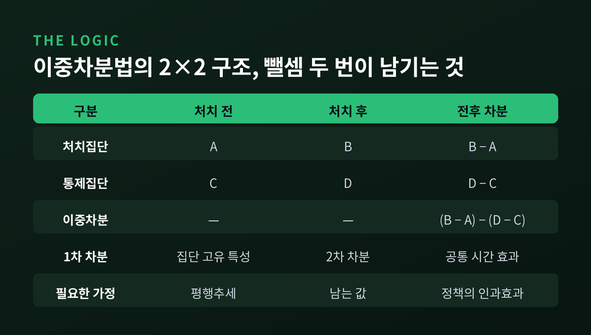
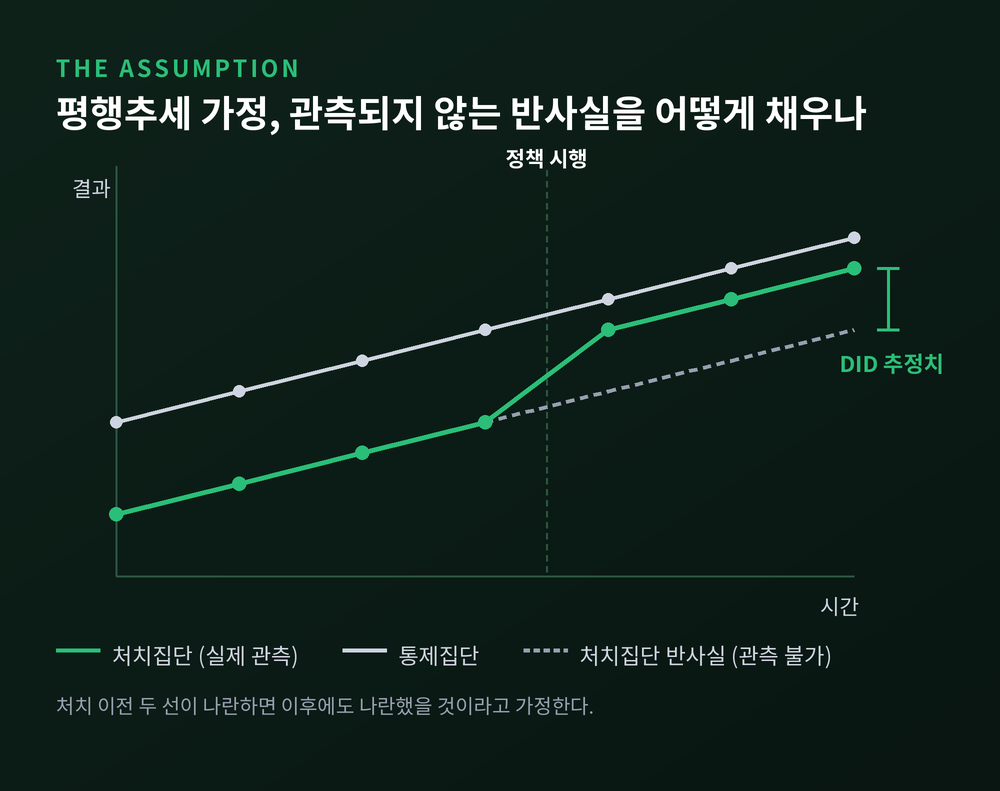
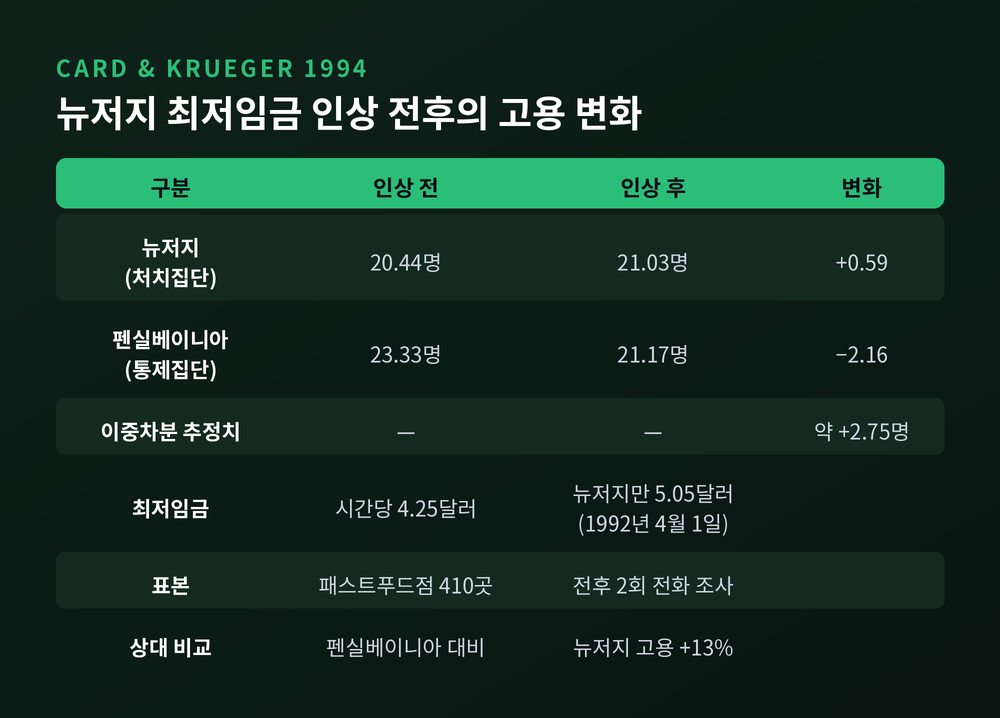
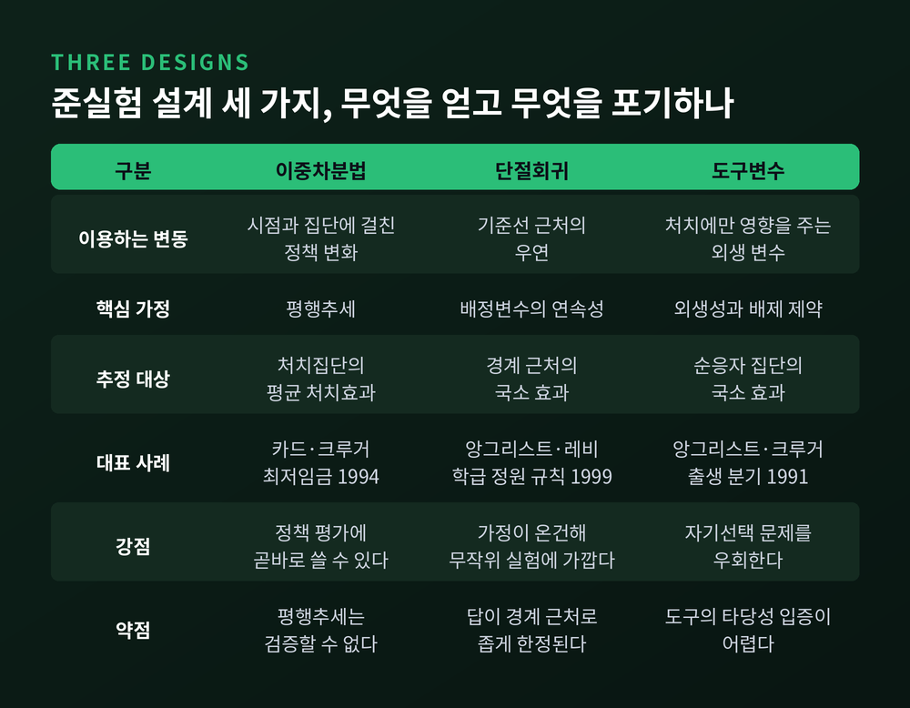
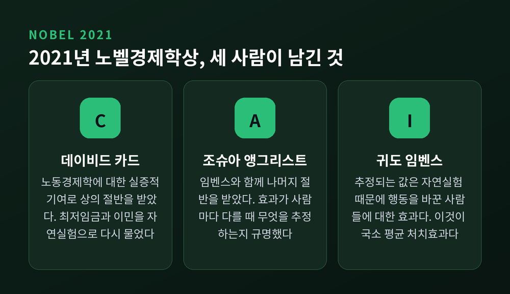
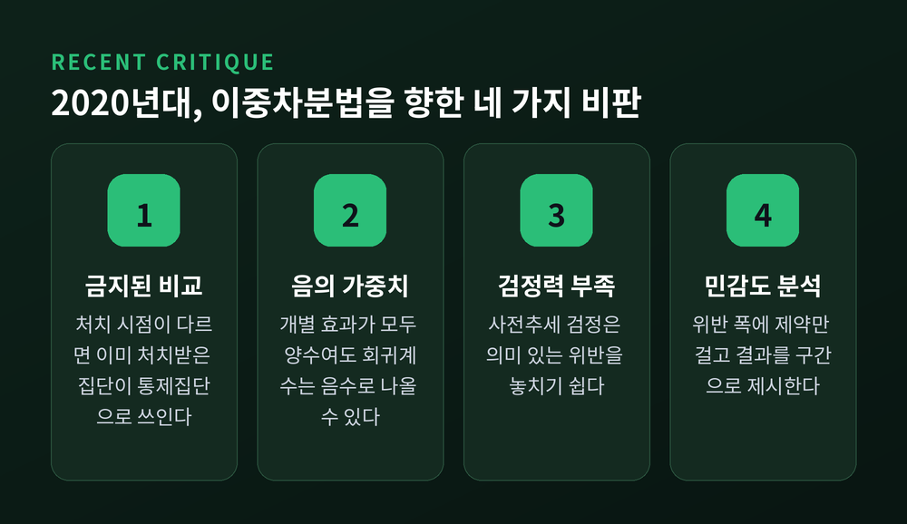

이중차분법과 자연실험, 경제학은 인과관계를 이렇게 증명합니다
오늘은 경제학이 인과관계를 어떻게 증명하는지 정리해 보겠습니다. 실험실을 가질 수 없는 학문이 어떤 방법으로 "이것 때문에 저렇게 되었다"고 말할 수 있는지에 관한 이야기입니다.
세 줄 요약
- 상관관계는 인과관계가 아닙니다. 교육 1년과 소득의 단순 상관은 7%였지만, 자연실험으로 추정한 인과효과는 9%였습니다.
- 이중차분법은 처치집단의 전후 변화에서 통제집단의 전후 변화를 한 번 더 빼는 방법입니다. 평행추세라는 단 하나의 가정 위에 서 있습니다.
- 2021년 노벨경제학상은 이 접근을 개척한 카드, 앵그리스트, 임벤스에게 돌아갔습니다. 다만 최근 계량경제학은 이 방법의 약한 고리를 다시 파헤치고 있습니다.
상관관계와 인과관계가 갈라지는 지점
노벨위원회는 문제를 이렇게 요약했습니다. 우리는 다른 선택을 했다면 무슨 일이 일어났을지 결코 알 수 없습니다.
교육과 소득이 좋은 예입니다. 1930년대에 태어난 미국 남성 자료를 보면, 교육 기간이 1년 더 긴 사람의 소득이 평균 7% 높았습니다. 교육 12년인 사람은 11년인 사람보다 12% 높고, 16년인 사람은 65%까지 높습니다.
그렇다고 1년을 더 다니면 소득이 7% 오른다고 말할 수는 없습니다. 오래 공부하는 사람은 애초에 다른 사람입니다. 공부에도 일에도 재능이 있는 사람이라면, 학교를 덜 다녔더라도 소득이 높았을 것입니다.
방향이 거꾸로일 수도 있습니다. 최저임금과 고용의 음의 상관을 봅시다. 실업이 늘면 고용주가 임금을 낮게 책정할 수 있고, 그것이 다시 최저임금을 올리라는 요구로 이어질 수 있습니다. 원인과 결과가 뒤집히는 것입니다.
무작위 배정 실험이 답이 되지만, 사회 문제에는 대개 쓸 수 없습니다. 누가 고등학교에 다니고 누가 다니지 못할지를 제비뽑기로 정할 수는 없으니까요.
이중차분법의 논리 — 두 번 빼면 무엇이 남는가
그래서 경제학은 현실 속에서 실험을 닮은 상황을 찾습니다. 이것을 자연실험이라 부릅니다. 자연적인 무작위 변동, 제도적 규칙, 특정 지역에만 적용된 정책 변화가 여기에 해당합니다.
이중차분법은 그 자연실험을 분석하는 가장 단순한 도구입니다.

먼저 처치집단의 사후 값에서 사전 값을 뺍니다. 이 첫 번째 차분이 지워 주는 것은 그 집단에 고정된 고유한 특성입니다. 다음으로 통제집단에서도 같은 계산을 하고, 그 값을 앞의 값에서 뺍니다. 두 번째 차분이 지워 주는 것은 두 집단에 공통으로 작용한 시간의 효과입니다. 경기 변동이나 계절성 같은 것들이지요.
남는 것이 정책의 효과입니다. 계산 자체는 뺄셈 두 번이 전부입니다.
역사는 생각보다 깁니다. 1855년 존 스노가 콜레라의 전파 경로를 밝힌 분석이 사실상 최초의 이중차분법으로 평가됩니다. 램버스 수도회사는 취수 지점을 템스강의 덜 오염된 구간으로 옮겼고, 사우스워크앤복스홀은 오염된 구간을 그대로 썼습니다. 1848~49년에는 두 회사 구역의 사망률이 같았습니다. 1854년에는 사우스워크앤복스홀 쪽이 여덟에서 아홉 배 높았습니다.
물이 원인이라는 결론이 뺄셈 두 번에서 나온 셈입니다.
평행추세, 이 방법의 유일한 전제
이중차분법이 서 있는 가정은 하나뿐입니다. 처치가 없었다면 두 집단의 평균 결과가 나란히 움직였을 것이라는 가정입니다.

오해하기 쉬운 부분이 있습니다. 이 가정은 처치가 무작위로 배정될 것을 요구하지 않습니다. 결과의 수준에 영향을 주는 특성에 따라 처치가 비무작위로 배정되어도 괜찮습니다. 다만 결과의 추세에 영향을 주는 요인과는 무관해야 합니다. 선택 편의가 있어도 되지만, 그 크기가 전후 기간에 같아야 한다는 뜻입니다.
문제는 이 가정을 검증할 방법이 없다는 데 있습니다. 반사실은 관측되지 않으니까요. 그래서 연구자들은 처치 이전 기간의 추세가 나란한지를 대신 확인합니다.
여기서 흔한 착각이 생깁니다. 사전 기간에 평행추세가 기각되지 않았다고 해서 가정이 확증된 것은 아닙니다. 귀무가설을 기각하지 못한 것과 귀무가설을 확인한 것은 전혀 다른 일입니다.
카드와 크루거의 최저임금 연구
이 방법을 유명하게 만든 연구가 있습니다.
1992년 4월 1일, 뉴저지주는 시간당 최저임금을 4.25달러에서 5.05달러로 올렸습니다. 바로 옆 펜실베이니아는 4.25달러를 유지했습니다. 카드와 크루거는 두 주의 패스트푸드점 410곳을 인상 전과 인상 후에 각각 조사했습니다.
패스트푸드를 고른 이유는 분명합니다. 임금이 낮아 최저임금이 실제로 구속력을 갖는 업종이기 때문입니다.

결과는 통념과 반대였습니다. 정규환산 고용 인원은 뉴저지에서 20.44명에서 21.03명으로 늘었고, 펜실베이니아에서는 23.33명에서 21.17명으로 줄었습니다. 두 번 빼면 약 2.75명입니다. 논문의 표현으로는 펜실베이니아 매장과 비교해 뉴저지 매장이 고용을 13% 늘렸습니다.
같은 연구에는 더 흥미로운 대목이 있습니다. 뉴저지 안에서도 원래 임금이 높아 새 법의 영향을 받지 않은 매장은 펜실베이니아와 같은 고용 증가율을 보였습니다. 임금을 올려야 했던 매장이 오히려 고용을 늘렸습니다.
물론 반론이 곧바로 나왔습니다. 뉴마크와 워셔는 전화 설문 대신 실제 급여 대장을 썼습니다. 뉴저지와 펜실베이니아의 230개 매장 자료였고, 결론은 음의 고용 효과였습니다. 카드와 크루거는 실업보험 급여세 기록으로 다시 답했습니다. 상대 표본이 특정 프랜차이즈와 특정 지역에 치우쳐 있었다는 지적이었습니다.
이 논쟁은 지금도 완전히 끝나지 않았습니다. 다만 이후의 대규모 연구들은 한쪽으로 기울었습니다. 듀브와 동료들은 1990년부터 2006년까지 주 경계를 사이에 둔 미국의 모든 인접 카운티 쌍을 비교해 부정적 고용 효과를 찾지 못했습니다. 첸기즈와 동료들은 1979년부터 2016년까지 주 단위 최저임금 변화 138건을 분석해, 인상 이후 5년간 저임금 일자리 총수가 사실상 변하지 않았다고 보고했습니다.
노벨위원회의 종합 판단도 비슷합니다. 최저임금 인상의 부정적 효과는 작으며, 30년 전에 믿었던 것보다 유의하게 작다는 것입니다.
단절회귀·도구변수와 무엇이 다른가
준실험 설계는 이중차분법 하나가 아닙니다. 세 가지가 나란히 쓰입니다.

단절회귀는 기준선을 이용합니다. 커트라인 바로 아래와 바로 위의 대상은 사실상 구별할 수 없고, 어느 쪽에 떨어질지는 우연에 가깝습니다. 앙그리스트와 레비의 1999년 연구가 고전입니다. 12세기 랍비 학자 마이모니데스가 제안한 학급 정원 40명 규칙이 오늘날 이스라엘 공립학교에 살아 있습니다. 등록 인원이 40의 배수를 넘는 순간 학급 규모가 뚝 떨어집니다. 이 불연속을 이용해 학급 규모 축소가 4학년과 5학년의 시험 점수를 실질적으로 높인다는 결과를 얻었습니다. 3학년에서는 나타나지 않았습니다.
도구변수는 처치에는 영향을 주지만 결과에는 직접 닿지 않는 변수를 씁니다. 앙그리스트와 크루거는 출생 분기를 썼습니다. 같은 해에 태어난 아이들은 같은 날 입학하는데, 미국에서는 만 16세나 17세가 되면 학교를 떠날 수 있습니다. 그래서 연초에 태어난 아이가 더 일찍 학교를 떠날 수 있습니다.
여기서 앞서 말한 숫자가 나옵니다. 이 방법으로 추정한 교육 1년의 소득 효과는 9%였습니다. 단순 상관 7%보다 오히려 컸습니다. 야심 있고 똑똑한 사람이 교육도 소득도 높다면 결과는 반대여야 했으니, 이 관찰이 새로운 질문을 낳았습니다.
세 방법의 성격은 다릅니다. 단절회귀는 가정이 가장 온건하지만 경계 근처에만 답을 줍니다. 도구변수는 자기선택 문제를 우회하지만, 도구가 정말 결과에 직접 영향을 주지 않는지는 입증하기 어렵습니다. 실제로 많은 도구변수 연구에서 이 가정은 신념에 가깝다는 지적을 받습니다. 이중차분법은 정책 평가에 곧바로 쓸 수 있지만, 평행추세를 끝내 검증할 수 없습니다.
2021년 노벨상이 인정한 것
2021년 스베리예스 릭스방크 경제학상은 세 사람에게 돌아갔습니다.

절반은 데이비드 카드에게 노동경제학에 대한 실증적 기여로, 나머지 절반은 조슈아 앵그리스트와 귀도 임벤스에게 인과관계 분석에 대한 방법론적 기여로 공동 수여되었습니다.
카드의 다른 연구도 같은 결의 작업입니다. 1980년 4월 카스트로가 출국을 허용하자 다섯 달 사이 12만 5,000명의 쿠바인이 미국으로 건너갔고, 상당수가 마이애미에 정착했습니다. 마이애미 노동력이 약 7% 늘었습니다. 카드는 마이애미를 비교 도시 네 곳과 대조했습니다. 저학력 주민의 임금은 떨어지지 않았고 실업률도 오르지 않았습니다. 다만 이 결과 역시 논쟁 중입니다. 보하스는 2017년 저숙련 임금이 10~30% 하락했다고 반박했습니다.
앵그리스트와 임벤스의 기여는 조금 다른 층위에 있습니다. 처치 효과가 사람마다 다르고 참여를 강제할 수 없을 때, 자연실험에서 도대체 무엇을 추정하고 있는지를 규명했습니다.
결론은 겸손합니다. 우리가 추정할 수 있는 것은 자연실험 때문에 실제로 행동을 바꾼 사람들에 대한 효과뿐입니다. 앞의 9%도 기회가 주어졌을 때 실제로 학교를 떠나기로 선택한 사람들에게만 적용됩니다. 누가 그 집단에 속하는지는 알 수 없고, 크기만 알 수 있습니다. 이것을 국소 평균 처치효과라 부릅니다.
예전에는 회귀분석의 계수를 곧 인과효과로 읽었습니다. 지금은 어떤 가정 아래 누구에 대한 효과인지를 먼저 밝힙니다. 이 변화를 신뢰성 혁명이라 부릅니다.
이중차분법도 흔들리고 있습니다
이 방법이 완성형은 아닙니다. 2020년대 계량경제학은 오히려 이중차분법의 약한 고리를 집중적으로 파고들었습니다.

첫째, 처치 시점이 집단마다 다를 때 문제가 생깁니다. 굿맨-베이컨은 이원고정효과 추정치가 가능한 모든 2×2 비교의 가중평균임을 보였습니다. 그 안에는 이미 처치받은 집단을 통제집단으로 쓰는 금지된 비교가 섞여 있고, 이것이 음의 가중치로 들어갈 수 있습니다.
둘째, 그 결과는 생각보다 심각합니다. 드 셰즈마르탱과 도툴푀유는 개별 효과가 모두 양수인데도 회귀계수가 음수로 나올 수 있음을 보였습니다. 한 재검토 사례에서는 5,472개 효과가 양의 가중치를, 4,605개가 음의 가중치를 받았고 음의 가중치 합이 −1.43에 달했습니다.
셋째, 사전추세 검정 자체가 미덥지 않습니다. 로스는 이 검정의 검정력이 낮아 의미 있는 위반을 놓칠 수 있고, 검정 결과에 조건부로 분석을 이어가면 점추정치의 편의가 오히려 커진다는 점을 보였습니다.
넷째, 그래서 대안이 나왔습니다. 캘러웨이와 산타나는 두 시점 모두 미처치인 깨끗한 비교만 쓰는 방법을 제안했습니다. 람바찬과 로스는 평행추세가 정확히 성립할 것을 요구하는 대신, 처치 후 위반이 처치 전 추세와 크게 다르지 않다는 제약만 걸었습니다. 이때 결과는 하나의 값이 아니라 구간으로 나옵니다. 답이 흐릿해지는 대신 정직해지는 셈입니다.
정리하면 이렇습니다.
이중차분법은 뺄셈 두 번으로 인과를 말하는 방법이고, 그 힘은 계산의 정교함이 아니라 비교 대상을 잘 고르는 안목에서 나옵니다. 뉴저지 옆에 펜실베이니아를 둘 생각을 한 사람이 결국 답을 얻었습니다.
그리고 이 방법은 자신의 한계를 감추지 않습니다. 평행추세는 끝까지 증명되지 않고, 추정된 값은 특정 집단에만 적용되며, 최근 30년의 표준적 계산법조차 다시 쓰이고 있습니다.
— 좋은 방법은 답을 주는 방법이 아니라, 어떤 가정 위에 서 있는지를 스스로 밝히는 방법입니다.
경제학이 물리학처럼 정확해졌느냐고 물으신다면, 그렇지는 않다고 답하겠습니다. 다만 무엇을 모르는지는 훨씬 정확하게 알게 되었습니다.